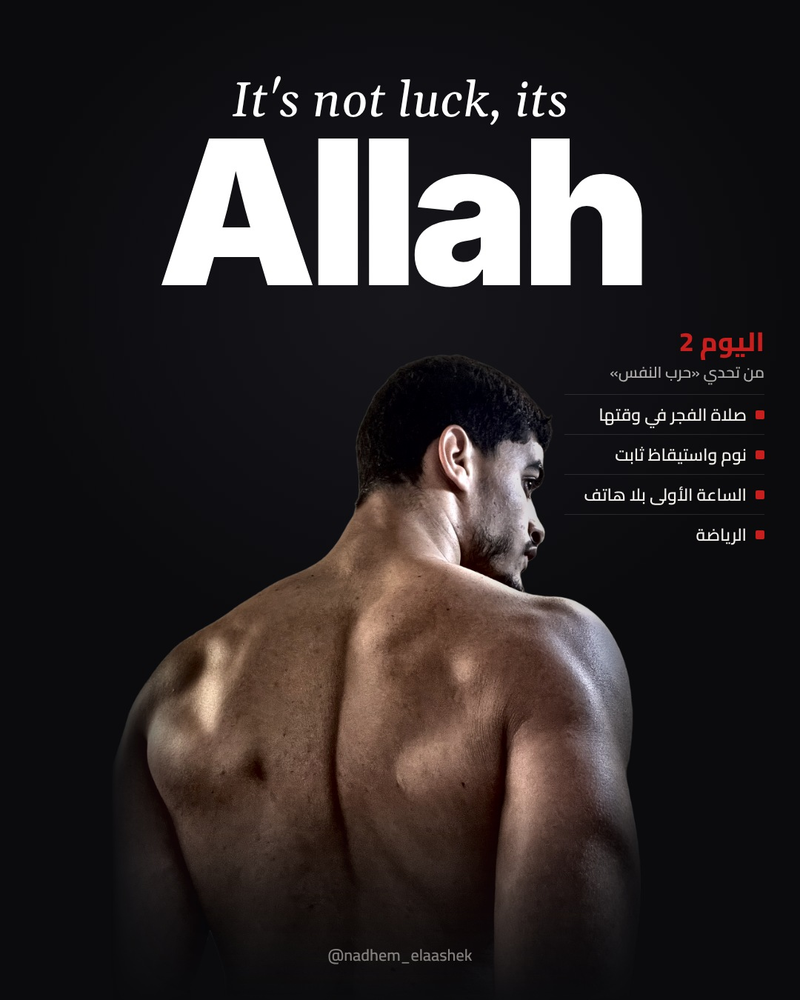
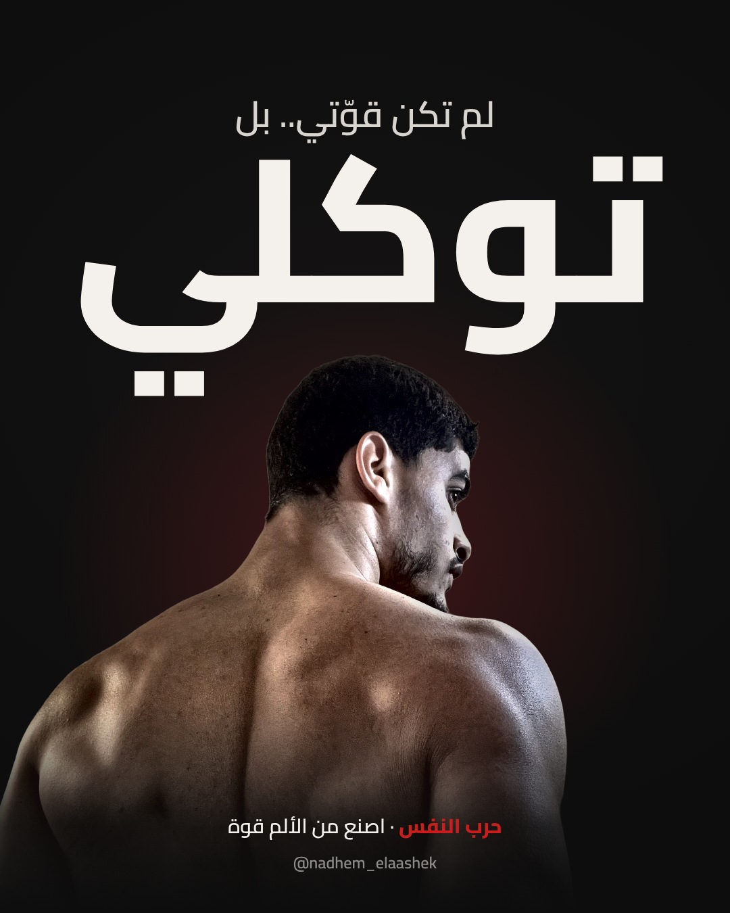
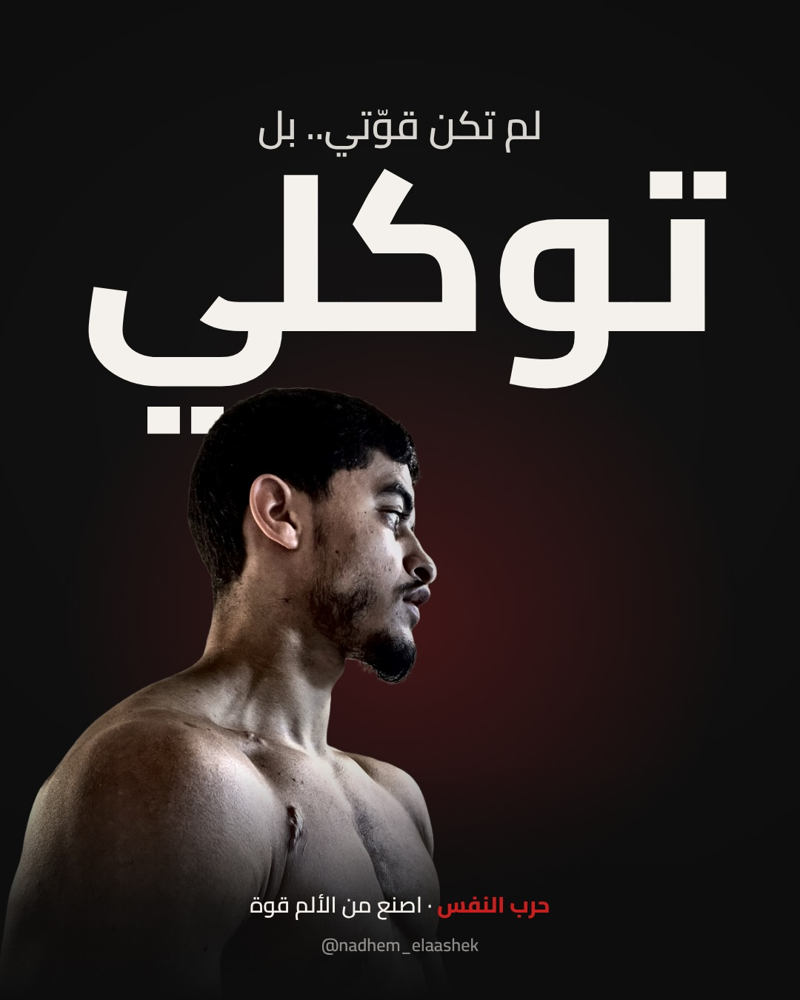

اضغط مطولا على الصورة ثم «حفظ في الصور».



لم أصل إلى هنا بقوّتي. كم مرةً سقطت، وكم مرةً ظننتُ أنها النهاية… لكنني في كل مرة كنت أقول: يا رب، ثم أقوم. الجسد يُبنى بالتمرين، والقلب يُبنى بالتوكّل. خُذ بالأسباب كأنها كلّ شيء، وتوكّل على الله كأنها لا شيء. #حرب_النفس #اصنع_من_الألم_قوة